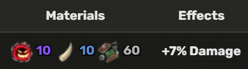

To obtain the Cursed Dual Katana, the player needs to get 350 Mastery on Yama and Tushita. Then, they have to do the CDK quest.
CDK Z Move
CDK X Move
1. First obtain the 2 swords Yama and Tushita by doing their quests.
2. Get 350 mastery on each sword.
3. Talk to Crypt Master to unlock the door and start the puzzle.
4. Complete 3 trials on each scroll (Yama & Tushita).
5. After trials, defeat the Cursed Skeleton boss to obtain the CDK.
Take 8–10k damage from an enemy or player while holding Yama. May need to try more than once.
World becomes foggy. Kill purple-marked NPCs across several Third Sea islands.
Summon Soul Reaper using Hallow Essence. Let it kill you. In Hell Dimension, light torches and defeat cursed skeletons. Beat Hell's Messenger to complete.
Talk to 3 different Boat Dealers and select “Pardon me” on final page.
Defeat an enemy during a pirate raid (occurs every 1 hour and 15 mins).
Damage Cake Queen boss, then kill her before song ends. In Heaven Dimension, light 3 torches and defeat enemies. Defeat Heaven’s Guardian to complete.
Talk to the blacksmith to upgrade the sword: 